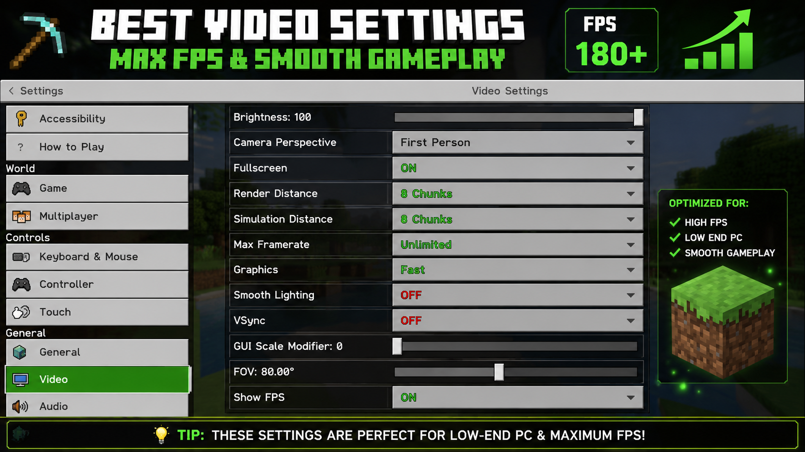

Learn the best settings and optimization tips to increase FPS in Minecraft Bedrock Edition.


Use Fast Graphics, reduce Render Distance to 8 chunks, and disable unnecessary effects.
Optimize Minecraft to get smoother gameplay on low-end devices.